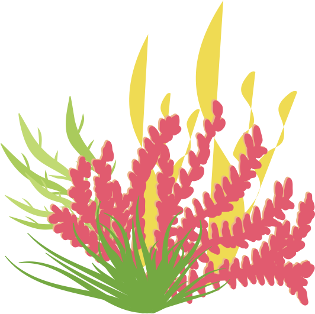

التعلم من خلال اللعب واللمس بالتعاون مع كبرى المؤسسات الدولية فى هذا المجال
نأتى إليك بأفضل المتخصصين فى جميع المجالات للبحث عن نقاط القوة فى كل ملتحق بمنجمنا من فصل الأطفال إلى سن الشباب. خلال هذه الرحلة ، نبذل قصارى جهدنا لإكتشاف جميع المواهب الممكنة والمهارات المحتملة للعمل على تنميتها والاستثمار فيها لتخريج جيل فعال ومميز على جميع المستويات.

كلمة السر دائما هى التوجيه والمتابعة والوصول لعمق على أسس علمية ومناهج معدة خصيصا لتحقيق أهدافنا جميعا كمؤسسة وأسرة.
التعلم باللمس
التعليم التفاعلي من خلال تفعيل الحواس الخمس
تتوفر وسائل تعليم المشى بشكل صحيح
لتقييم الشهري لقياس التقدم فى التطور البدن والعقلى

الحضانة الدولية (مرجان)
العلاج المهني والفحص التربوي
-المناهج الدراسية: 6W+1H(كيف تكتشف العالم)
-نمط الحياة المتبع :مونتيسوري
-تطبيق برامج يونيسف (لا للتنمر، بالهداوة مش بالقساوة وغيرها)
-عزيز الأخلاق والسلوكيات (حماية الجسم – الآداب العامة –وغيرها)
-رحلات ترفيهية وتعليمية
-تعليم الموسيقى والفنون
- أنشطة رياضية / بدنية
- تعليم مبادئ الطبخ
-أدوات ميكانو
-أنشطة تنمي تعلم المسؤولية والالتزام
-تقديم التوجيه لأولياء الأمور أثناء عملية الاختيار للمدرسة
مرحلة ما قبل المدرسة: 1.8شهر -4.8 شهر (ياقوت)
-العمل على تعزيز مهارات القرن الحادي والعشرين
-مهارات العرض والتقديم
-التفكير النقدي
-الإبداع
-التعاون
-الاتصالات
-المعرفة المعلوماتية
- الثقافة الإعلامية
-محو الأمية التكنولوجية
-المرونة
-القيادة
-تعزيز روح المبادرة والإنتاجية
-تنمية المهارات اجتماعية
المدرسة الصيفية 5 - 15 سنة(دهب)
-تعليم كيفية إعداد الأبحاث ، (كيفية استخدام التكنولوجيا بشكل مفيد وتجنب المحتوى السيئ) ، ما هو التسلط عبر الإنترنت cyber bullying .
-- جلسات نقاشية الموضوعات الساخنة التي تحيط بهم ، وضمان توفير المعرفة اللازمة وفقا لسنهم (التحرش ، ختان الإناث .. الخ)
-رحلات ترفيهية وتعليمية.
-بطولات الشطرنج وتنس الطاولة.
-آداب السلوك والتعامل الاجتماعي.
-التوازن اللغوي بين اللغة الأجنبية واللغة العربية
-برنامج UC MAS
-الكشافة ، بالتعاون مع الاتحاد المصري للكشافة.
-دورات الإسعافات الأولية بالتعاون مع الهلال الأحمر المصرى.
-تعليم فنون الموسيقى بالتعاون مع مركز تنمية المواهب - دار الأوبرا المصرية.
-ورش عمل فنية (حرف يدوية / رسم / تصوير صور .. إلخ بالتعاون مع مركز تنمية المواهب- دار الأوبرا المصرية /ساقية الصاوي.
-المسرح والدراما وكيفية صناعة الماريونيت (ساقية الصاوي).
- أنشطة رياضية / بدنية.
- ورش تعليم إعادة التدوير.
-المشاركة في القوافل الخيرية لتعزيز المسؤولية الاجتماعية.
-المساعدة فى المناهج الدراسية للسنة التالية.
خدمات تقدم لكل من الحضانة والمعسكر الصيفى:
-وجبات صحية بما في ذلك الوجبات الخفيفة (يستخدم الشيف زيت الزيتون فى الطهى )
-طبيب زائر أسبوعيا.
-نظام كاميرات داخلية.
-فصول متخصصة لتعليم اللغة الإنجليزية / الفرنسية.
-فور التسجيل ، يتم إجراء فحص طبي مجاني واعداد ملف طبي ومتابعة لكل طفل (مرضى السكري، زيادة وزن..إلخ) للمساعدة في اتخاذ الإجراءات اللازمة من متابعة وإعداد طعام خاص بالتعاون مع الأسرة.